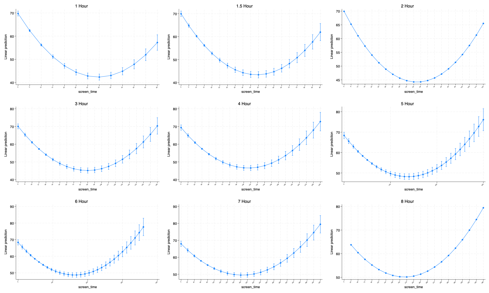
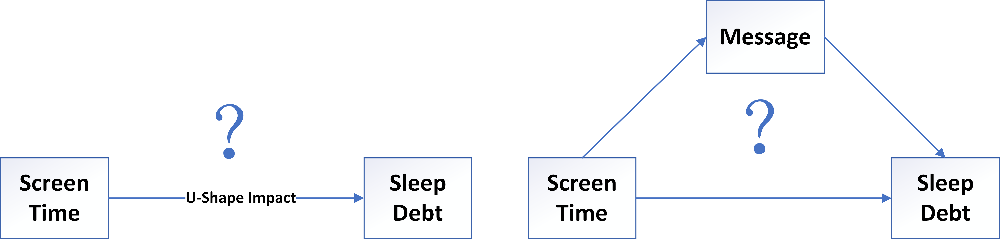
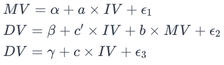
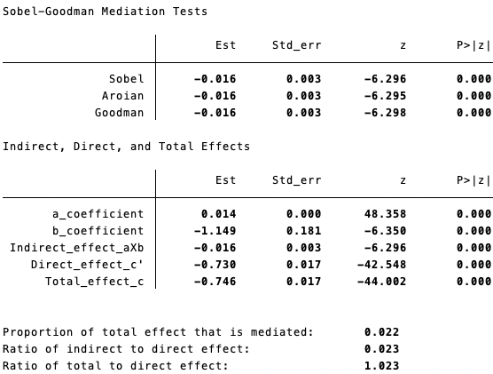
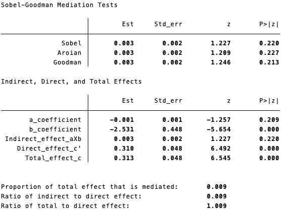
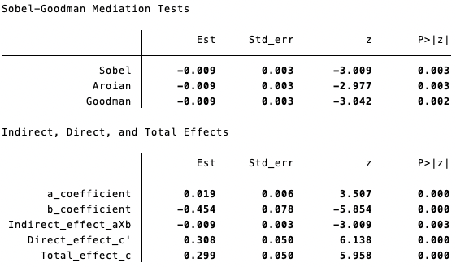

%%stata
clear all
set maxvar 120000, permanently
set more off
import delimited "/Users/shaokangyang/Library/CloudStorage/GoogleDrive-sky.ang510@gmail.com/My Drive/Nethealth/Data/CNSA/combine/7/df7_22-5.csv"
gen date2 = date(date, "YMD")1 Causal Mediation Analysis Based on Two-way Fixed Effects Model
Since we find the screen time has a U-shape impact on sleep debt, we may wonder what mechanisms behind it. The following figure implies that sleep debt may have a reverse shape of sleep debt. Therefore, we may want to explore whether the U-Shape of sleep debt is caused by the reverse U-shape of message.

First of all, one may be concered the rise of sleep debt after turning point may be driven by the potential outliers in the last two bars (screen time > 80 minutes). However, whether these observations are outliers cannot be determined solely by their proportion of the total dataset. We have 506 unique participants in our final data set. There are 353 (69.76% of total participants) unique participants whose screen time has ever been greater than 80 minutes; 293 (57.91% of total participants)participants whose screen time has ever been greater than 85 minutes. It suggests that a large proportion of participants contributed to the data of last two bars. This might mean that those observations are not anomalies but a representation of a segment of the population, which reflects the inherent nature of the data (Osborne and Overbay, n.d.). Moreover, the U-shape persists in all the variations of measurement window:

The above figure suggest that the U-shape always converge in the predictive models over the variation of measurement windows. Therefore, we believe those observations reflects the real-world variability. Maintaining outliers can sometimes contribute to the integrity and reliability of research findings(Bakker and Wicherts 2014).
Causal mediation analysis can help us to understand how an independent variable (IV) affects a dependent variable (DV) through a mediator variable (MV).


1.0.1 Import Dataset
1.0.2 Caual mediation analysis
#| echo: true
#| warning: false
#| output: false
#| code-overflow: wrap
%%stata
sgmediation2 sleep_debt, iv(screen_time) mv(message_q) cv(i.egoid i.date2 unlock call bytes length duration steps100 floors meanrate calorie_sum sedentaryminutes lightlyactiveminutes fairlyactiveminutes veryactiveminutes light_exposure insession#weekday#time_wakeuphour i.studyweeks)1.1 Sobel-Goodman Mediation Tests
- Sobel, Aroian, Goodman Tests: All three tests show a significant mediation effect. The estimates are -0.015 with very small standard errors, and the z-values are large with p-values of 0.000, indicating a highly significant mediation effect.
1.1.1
1.2 Before turning point

1.2.1

1.2.2 Interpretation:
Mediator (Message) Model: Message=⍺+0.014×Screen Time+ϵ1
- For every unit increase in screen time, message increases by 0.014 units, assuming message is quantifiable. This relationship is highly significant (p < 0.001).
Dependent Variable (Sleep Debt) Model: Sleep Debt=𝛃−0.730×Screen Time−1.149×Message+ϵ2
Screen time has a significant negative direct effect on sleep debt (-0.730), suggesting that increased screen time reduces sleep debt.
Message also has a significant negative effect on sleep debt (-1.149), indicating that higher message is associated with reduced sleep debt.
These effects are statistically significant (p < 0.001).
Total Effect of Screen Time on Sleep Debt: Sleep Debt=𝛄−0.746×Screen Time+ϵ3
- The total effect of screen time on sleep debt is significant and negative (-0.746), indicating that increased screen time is associated with reduced sleep debt overall.
Mediation Analysis:
The indirect effect of screen time on sleep debt through message is -0.016 (a * b), and it’s significant (p < 0.001). This suggests that part of the effect of screen time on sleep debt operates through its impact on message frequency. Although the impact on the message is relatively small (0.014), since the message is measured in quartiles, it still could have a big impact.
The proportion of the total effect that is mediated (approx. 2.2%) indicates that a small but significant portion of the relationship between screen time and sleep debt is explained by message frequency.
Summary:
Increased screen time is associated with both increased message and reduced sleep debt.
The direct effect of screen time on sleep debt is strong and negative, meaning screen time directly contributes to reducing sleep debt.
There is a significant but small mediation effect through message frequency, suggesting that part of the way screen time affects sleep debt is by influencing message frequency.
Overall, the total effect of screen time on sleep debt, considering both direct and indirect pathways, is significant and negative.
1.3 After turning point


1.3.1 Sobel-Goodman Mediation Tests
Indirect, Direct, and Total Effects:
a_coefficient (Effect of IV on MV): The effect of the independent variable on the mediator is -0.001, which is not statistically significant (p = 0.209).
b_coefficient (Effect of MV on DV): The effect of the mediator on the dependent variable is -2.531 and is statistically significant (p < 0.001).
Indirect_effect_aXb (Mediation Effect): The indirect effect, calculated as the product of a and b coefficients, is 0.003 but not statistically significant (p = 0.220).
Direct_effect_c’ (Direct Effect of IV on DV): The direct effect of the independent variable on the dependent variable is 0.310, which is significant (p < 0.001).
Total_effect_c (Total Effect of IV on DV): The total effect is 0.313, also significant (p < 0.001).
Proportions and Ratios:
Proportion of total effect that is mediated: About 0.9% of the total effect is mediated, which is quite small.
Ratio of indirect to direct effect: The indirect effect is approximately 0.9% of the direct effect.
Ratio of total to direct effect: The total effect is 1.009 times the direct effect.
1.3.2 Interpretation:
Mediation Effect: The results suggest that the mediation effect in the model is not statistically significant. This implies that the relationship between the independent and dependent variables is not significantly channeled through the mediator.
Direct Effect: The direct relationship between the independent variable and the dependent variable is significant and represents the main pathway of influence.
Total Effect: The overall effect of the independent variable on the dependent variable is significant, predominantly driven by the direct pathway.
Messages still help reduce sleep debt (-2.531***), but the mediation effect is not significant anymore because the channel from screen time to message is cut off (not significant). This is a bit different from our earlier results since the interaction term (screen time * message) earlier suggests that their combination could negatively impact sleep debt.
Mediation Proportion: The small proportion of mediation suggests that the mediator plays a negligible role in the relationship between the independent and dependent variables in this particular analysis.
1.3.3 Outlier Handling
According to the 1.5 IQR rule, observations with messages > 20 or unlocks > 23.5 should be taken as outliers. Therefore, I take 20 as the message frequency for those that are greater than 20. Similarly, I take 23.5 as unlocking outliers’ values.


1.3.4 Indirect, Direct, and Total Effects
a_coefficient: The effect of the independent variable on the mediator is significant (Est = 0.019, p < 0.001).
b_coefficient: The effect of the mediator on the dependent variable, controlling for the independent variable, is also significant (Est = -0.454, p < 0.001).
Indirect_effect_aXb: The estimated indirect effect is -0.009, which is significant (p = 0.003). This suggests that the mediator carries some of the influence of the independent variable to the dependent variable.
Direct_effect_c’: The direct effect of the independent variable on the dependent variable is significant and positive (Est = 0.308, p < 0.001).
Total_effect_c: The total effect (considering both direct and mediated pathways) is also significant (Est = 0.299, p < 0.001).
1.3.5 Proportions and Ratios
Proportion of total effect that is mediated: -0.029. This negative value is somewhat unusual in mediation analysis. It suggests that the indirect effect works in the opposite direction to the total effect.
Ratio of indirect to direct effect: -0.029, indicating that the magnitude of the indirect effect is small compared to the direct effect.
Ratio of total to direct effect: 0.971, suggesting that the majority of the total effect is due to the direct effect.
1.3.6 Overall Interpretation
The mediation effect in the model is statistically significant, but its impact is relatively small compared to the direct effect of the independent variable on the dependent variable.
The negative value for the proportion of the total effect that is mediated indicates a complex relationship between the variables, potentially involving suppression effects or other intricate dynamics in the model. It could suggest that while the mediator transmits some of the influence, it does so in a way that partially offsets or reduces the total effect of the independent variable on the dependent variable. This warrants a closer examination of the nature of the variables and their interactions.
References
Bakker, Marjan, and Jelte M. Wicherts. 2014. “Outlier Removal and the Relation with Reporting Errors and Quality of Psychological Research.” Edited by Lise Lotte Gluud. PLoS ONE 9 (7): e103360. https://doi.org/10.1371/journal.pone.0103360.
Osborne, Jason W., and Amy Overbay. n.d. “The Power of Outliers (and Why Researchers Should ALWAYS Check for Them).” https://doi.org/10.7275/QF69-7K43.